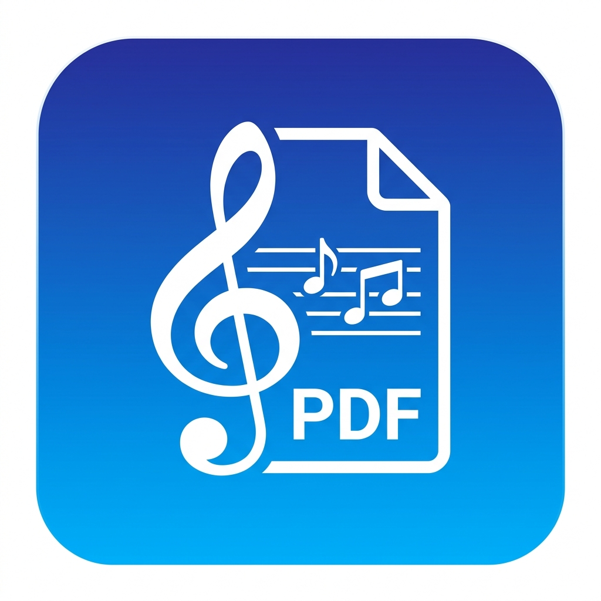

MuseScore PDF Exporter
v1.0.0
How to use:
- Open a sheet music page on musescore.com.
- Click the floating "Clean PDF Export" button at the bottom right of the page.
- Wait for all preview pages to load.
- In the system print popup, select "Save as PDF".
- Uncheck "Headers and footers" for a clean layout.